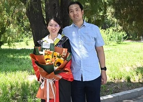
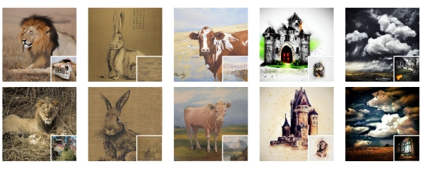
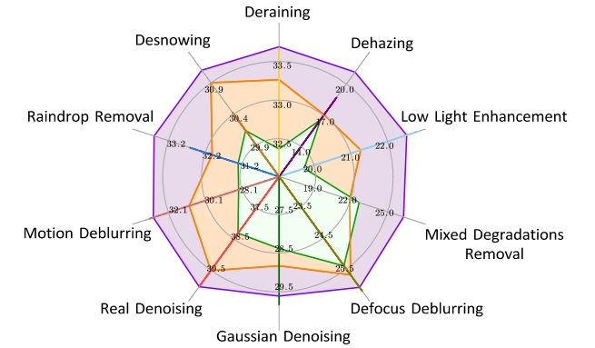
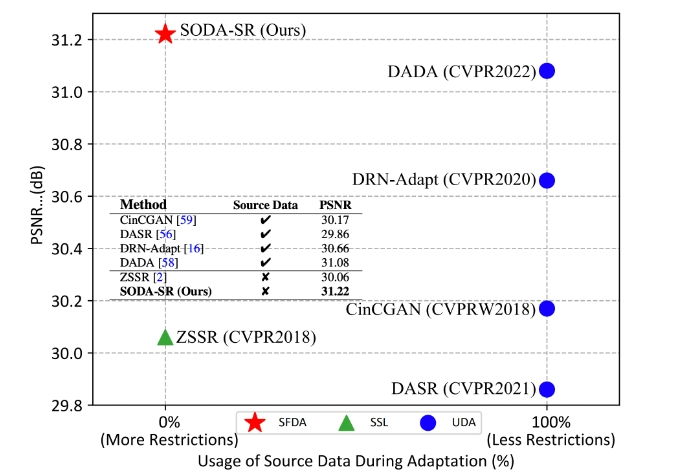
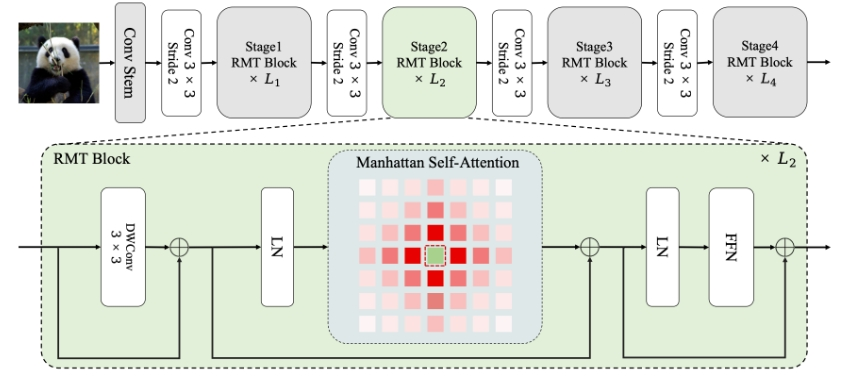
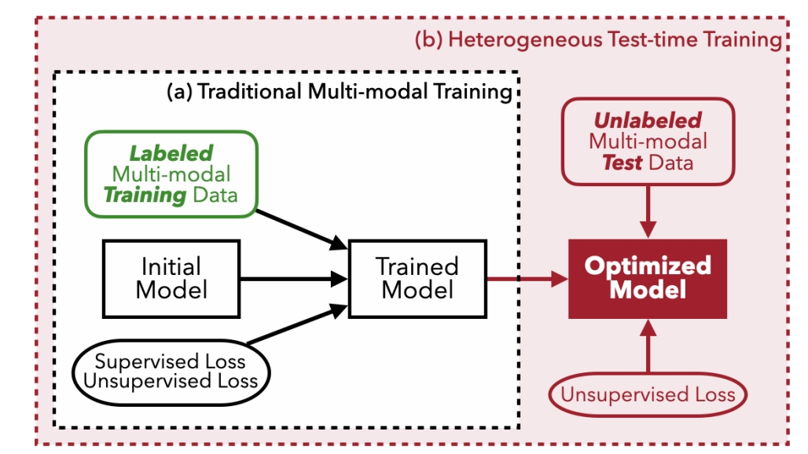
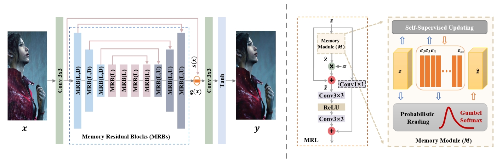
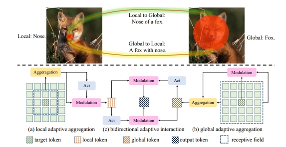
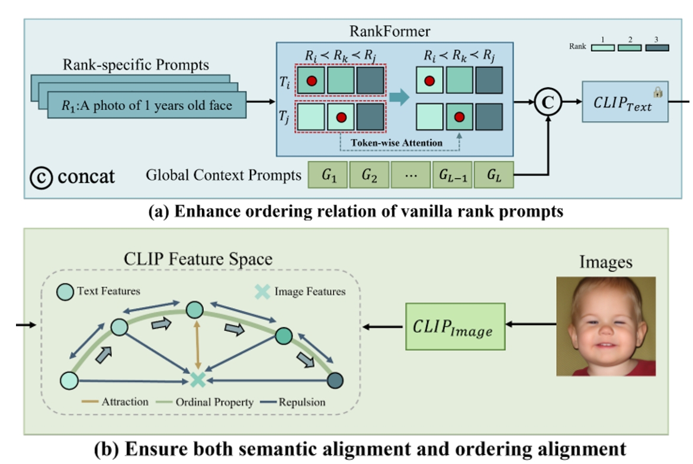
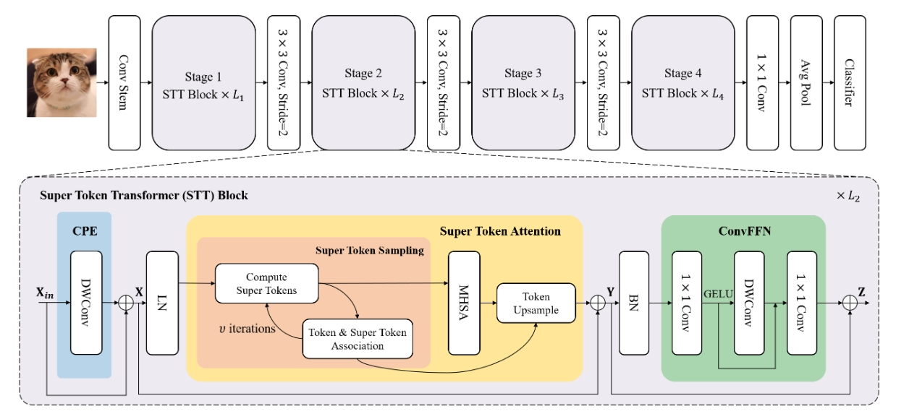

|  |
Huaibo Huang
|
I am an associate professor at Institute of Automation, Chinese Academy of Sciences (CASIA). Before that, I obtained my Ph.D. degree from CRIPAC-NLPR-CASIA in 2019, under the supervision of Prof. Tieniu Tan. I received my M.E. degree from Beihang University in 2016 under the supervision of Prof. Di Feng. I received my B.E. degree from Xi’an Jiaotong University in 2012.
My current research interests mainly focus on multimodality, generative learning and low-level vision.
I am open to any discussion or collaboration. If you are interested, please feel free to contact me.
|  |
InstaStyle: Inversion Noise of a Stylized Image is Secretly a Style Adviser |
|  |
Multimodal Prompt Perceiver: Empower Adaptiveness, Generalizability and Fidelity for All-in-One Image Restoration |
|  |
Uncertainty-Aware Source-Free Adaptive Image Super-Resolution with Wavelet Augmentation Transformer |
|  |
RMT: Retentive Networks Meet Vision Transformers |
|  |
Heterogeneous Test-time Training for Multi-modal Person Re-identification |
|  |
Memory Uncertainty Learning for Real-World Single Image Deraining |
|  |
Lightweight Vision Transformer with Bidirectional Interaction |
|  |
Learning-to-Rank Meets Language: Boosting Language-Driven Ordering Alignment for Ordinal Classification |
|  |
Vision Transformer with Super Token Sampling |
Conference Area Chair: NeurIPS, PRCV
Conference Reviewer: NeurIPS, ICLR, ICML, CVPR, ICCV, ECCV
Journal Reviewer: TPAMI, IJCV, TIP, TIFS, TCSVT, PR
[2024.03] 吴文俊人工智能科学技术奖技术发明一等奖（First Prize of Wu Wenjun AI Technology Invention Award）(3/6)
[2023.11] 北京市科技新星创新新星（Beijing Nova Program）
[2023.06] Runner-Up Award in NTIRE 2023 Challenge on 360°Omnidirectional Image Super-Resolution
[2023.06] 2nd Place Award in NTIRE 2023 Challenge on Image Super-Resolution (x4)
[2022.01] 中国科学院青年创新促进会会员（Member of CAS Youth Innovation Promotion Association）
[2020.01] 北京市科学技术协会青年人才托举工程（BAST Young talents Lift Engineering）
[2019.07] International Workshops of ITMC in ICME Best Student Paper Award
[2019.06] 北京市优秀毕业生（Beijing Outstanding Graduates）
[2019.06] 中国科学院院长优秀奖（Chinese Academy of Sciences Presidential Scholarship）